1. 자원(인적자원)관리 프로세스
자원(인적자원)관리는 프로젝트 팀과 물적 자원을 식별·확보·개발·관리·통제하는 지식영역이다.
| 프로세스 | 내용 |
|---|---|
| 자원관리 계획수립 | 자원 산정·조달·관리 방법 정의(역할·책임 RACI) |
| 활동 자원 산정 | 활동별 필요 자원(인력·장비·자재) 산정 |
| 자원 확보 | 팀·물적 자원 획득(협상·선발) |
| 팀 개발 | 역량·팀워크 향상(교육·팀빌딩·터크만 단계) |
| 팀 관리 | 성과 추적·피드백·갈등 해결·이슈 관리 |
| 자원 통제 | 물적 자원의 계획 대비 사용 감시 |
프로세스별 상세 설명
② 활동 자원 산정: 활동 수행에 필요한 자원의 종류·수량 추정.
③ 자원 확보(팀 확보): 필요한 팀원·물적 자원을 협상·선발하여 확보.
④ 팀 개발: 팀원 역량·팀워크·전체 환경을 향상(교육·팀빌딩·터크만 단계).
⑤ 팀 관리: 성과를 추적·피드백하고 이슈·갈등을 해결하며 팀 변경을 관리.
⑥ 자원 통제: 물적 자원이 계획대로 할당·사용되는지 감시.
▸ 원본 p.4 표 복원: 인적 자원 관리 계획수립
| 입력물(Input) | 도구 및 기법(Tool & Technique) | 산출물(Output) |
|---|---|---|
| 프로젝트 관리 계획서 (Project Management Plan) 활동 자원 요구사항 (Activity Resource Requirements) 기업 환경 요인(EEF) 조직 프로세스 자산(OPA) | 조직도 및 직무 기술서 (Organization Charts and Position Descriptions) 네트워킹(Networking) 조직 이론(Organizational Theory) 전문가 판단(Expert Judgment) 미팅(Meetings) | 인적 자원 관리 계획서 (Human Resource Management Plan) |
▸ 원본 p.6 표 복원: 인적 자원 관리 계획수립
| 역할과 책임 문서화 유형 | 특징 및 설명 | 예시 |
|---|---|---|
| 계층 구조형 차트 (Hierarchical-Type Charts) | OBS(Organizational Breakdown Structure)는 직위와 관계를 상하 도식화하여 조직의 현재 부서, 단위 또는 팀에 따라 정렬하고 프로젝트 활동 또는 작업 패키지를 각 조직 아래 나열한 것 RBS(Resource Breakdown Structure)는 자원 유형별로 계층구조를 나열한 것으로 인적 자원 외에 자원을 포함 | |
| 매트릭스형 차트 (Matrix-Based Charts) | RAM(Responsibility Assignment Matrix)는 작업 패키지에 할당된 프로젝트 자원을 보여주는데 사용하는 표 RAM = WBS + OBS RAM의 한 유형으로 RACI 도표가 있음 |
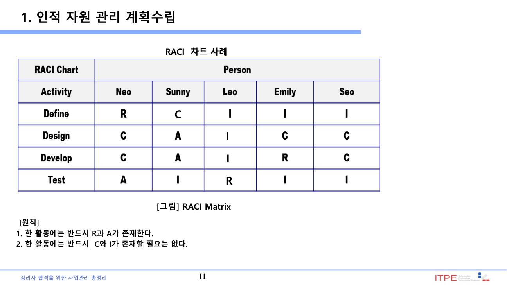
2. 동기이론 ★★★
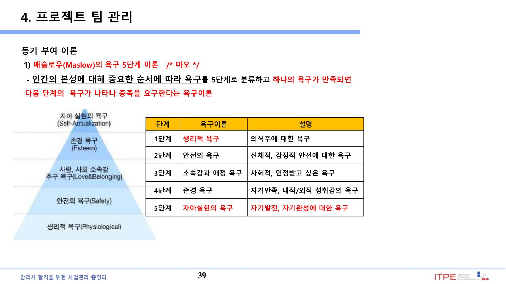
| 이론 | 핵심 내용 |
|---|---|
| 매슬로 욕구 5단계 | 생리 → 안전 → 사회(소속) → 존경 → 자아실현. 하위 충족 후 상위로 이동 |
| 허즈버그 2요인 | 위생요인(급여·근무조건·정책 – 불만 방지) / 동기요인(성취·인정·성장 – 만족·동기부여) |
| 맥그리거 X·Y이론 | X: 인간은 게으름 → 통제·지시 / Y: 자율·책임감 → 권한위임 |
| 브룸 기대이론 | 동기 = 기대(Expectancy) × 수단성(Instrumentality) × 유의성(Valence) |
| 맥클리랜드 성취동기 | 성취·권력·친교 욕구 |
3. 동기 과정이론 · 애덤스 공정성이론 ★★★
내용이론 vs 과정이론
| 구분 | 이론 |
|---|---|
| 내용이론(무엇이 동기부여) | 매슬로 욕구 5단계, 허즈버그 2요인, 맥그리거 X·Y, 맥클리랜드 성취동기, 알더퍼 ERG |
| 과정이론(어떻게 동기부여) | 브룸 기대이론, 애덤스 공정성이론, 로크 목표설정이론 |
브룸(Vroom) 기대이론
· 기대: 노력하면 성과가 날 것이라는 믿음 · 수단성: 성과가 보상으로 이어질 것이라는 믿음 · 유의성: 보상의 가치(직무 결과 가치)
애덤스(Adams) 공정성이론(Equity Theory)
개인은 자신의 투입 대비 산출(보상) 비율을 비교대상의 비율과 견주어 공정성을 판단하고 행동한다.
· 적게 받는다고 느낌(부정적 불공정) → 노력 하향 · 많이 받는다고 느낌(긍정적 불공정) → 노력 상향
4. 터크만(Tuckman) 팀 발달 5단계 ★★
터크만(Tuckman)은 팀이 형성부터 해산까지 거치는 5단계 발달 모델을 제시했다. 각 단계의 특징과 순서가 출제된다.
| 단계 | 특징 |
|---|---|
| 형성(Forming) | 팀 구성, 서로 탐색·의존적 |
| 격동(Storming) | 의견 충돌·갈등 발생 |
| 규범(Norming) | 규칙·역할 정립, 협력 시작 |
| 수행(Performing) | 높은 성과·자율적 문제해결 |
| 해산(Adjourning) | 프로젝트 종료·팀 해체 |
5. 직무설계(Job Design) ★★
직무를 수행하는 사람에게 의미·만족을 부여하고 조직 성과를 높이도록 직무 내용·수행 방법을 설계하는 것.
| 유형 | 내용 |
|---|---|
| 직무 단순화 | 단순·반복 작업으로 구성, 절차 명확화 → 효율성 |
| 직무 순환 | 여러 직무를 차례로 경험하여 능력·자질 향상 |
| 직무 확대 | 수평적: 일의 양 증가 / 수직적: 일의 깊이 증가 |
| 직무 충실화 | 직무 내용을 고도화해 질을 높임(책임·자율 부여) |
6. 조직구조 설계모형 · 팀 구조 ★★
조직구조 설계는 학습(수평)과 효율(수직) 사이에서 조직을 설계하는 관점이며, 환경 안정성에 따라 기계적·유기적 구조로 구분된다.
| 설계모형 | 특징 |
|---|---|
| 수평적 조직설계(학습) | 매트릭스처럼 대등·기능횡단. 많은 팀·태스크포스, 학습·유연성 중시 |
| 수직적 조직설계(효율) | 상하 위계·계층 증가, 전문성 단일 분야 집중, 효율 중시 |
| 구조 | 특징 |
|---|---|
| 기계적 구조(Mechanistic) | 직무·권한·책임이 고전적·엄격, 관료제적 상하 계층(안정 환경) |
| 유기적 구조(Organic) | 상황에 맞게 유연 대응, 매트릭스·네트워크(변화 환경) |
팀 구조 – 이타적 팀(egoless team)
구성원 간 높은 상호작용·의사소통으로 결과물을 창출하는 팀. 장점: 전문가 역량 극대화(최신기술 프로젝트 적합). 단점: 리더십 결여 비판, 자아 충돌 우려.
▸ 원본 p.76 표 복원: 전략수립도구
| 구 분 | 도구 및 기법 | 내용 |
|---|---|---|
| 외부환경분석 | 거시환경분석 | 경제요인, 정치요인, 사회요인, 기술요인 |
| 5 Forces 분석 | 잠재적 경쟁자, 대체상품, 기존기업간 경쟁, 공급자, 구매자의 산업의 구조적 특성 및 기업구조의 가치 분석 | |
| 시나리오기법 | 미래의 불확실성을 감안하여 다양한 미래의 모습을 반영함으로써 단순 예측기법의 한계를 보완 | |
| 내부역량분석 | 재무제표분석 | 재무비율(안정성, 활동성), 자금 흐름 분석 |
| Value Chain | 기업활동을 주활동부와 부활동부로 나눠, 각각의 부문에서 비용이 얼마나 들고 소비자들에게 얼마나 부가가치를 창출하는 지를 보다 정교하게 분석; VBM 연계 | |
| 7S Model | 전체적인 시각에서 기업조직의 변화대처능력에 영향을 끼치는 7가지(Style, Strategy, Structure, System, Skill, Staff, Share Value) 경영요소로 전략 수립/ 실행/평가 | |
| 경쟁전략수립 | SWOT분석 | 외부환경의 기회/위협(Opportunities Threats), 내부 강,약점(Strengths, Weakness)을 분석하여 전략적 과제 및 방향성 설정 |
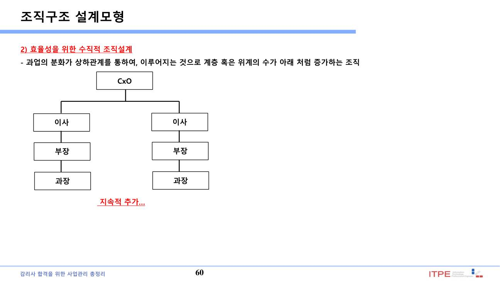
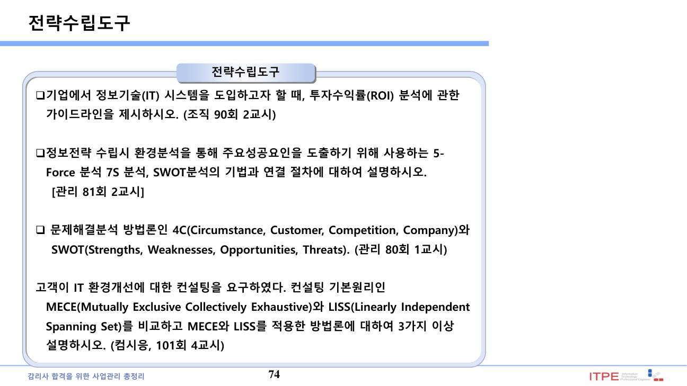
7. 리더십 · 권력 · 조직문화
리더십은 팀을 목표로 이끄는 영향력이며, 리더십 유형·권력 원천·조직문화가 함께 출제된다.
| 리더십 | 내용 |
|---|---|
| 거래적 리더십 | 성과-보상 교환 기반(관리 중심) |
| 변혁적 리더십 | 비전 제시·영감으로 변화 유도 |
| 카리스마 리더십 | 개인적 매력·신뢰로 추종 유도 |
| 서번트 리더십 | 구성원 지원·섬김 중심(애자일 친화) |
권력(Power) 유형: 공식적(합법적·보상·강압) vs 개인적(전문가·준거). PM은 전문가·준거 권력이 바람직하며, 강압은 최후 수단.
조직문화(7S): Strategy·Structure·System·Staff·Skill·Style·Shared value. 조직의 고유 문화를 식별·전파하여 조직 색깔을 형성(맥킨지 7S).
8. 갈등관리 기법 ★★★
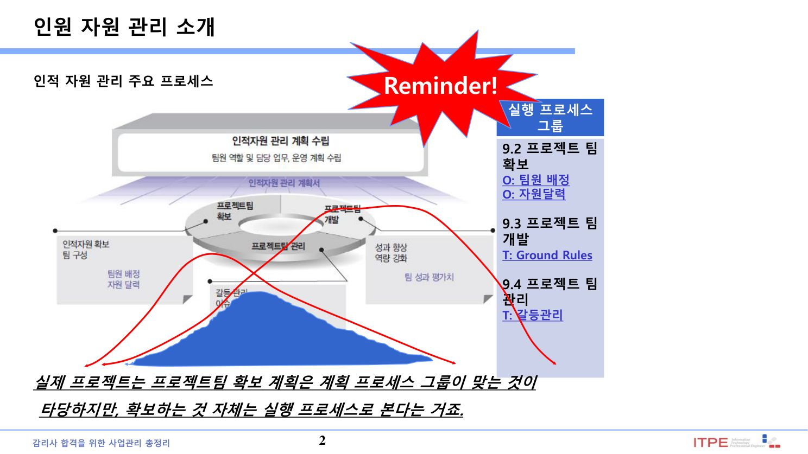
| 기법 | 내용 |
|---|---|
| 직면/문제해결(Confronting/Problem Solving) | 근본 원인을 함께 해결. Win-Win, 가장 바람직 |
| 협력(Collaborating) | 여러 관점을 통합, 합의 도출 |
| 타협(Compromising) | 상호 양보(Lose-Lose 또는 부분만족) |
| 완화/수용(Smoothing/Accommodating) | 공통점 강조, 차이 완화(일시적) |
| 강요(Forcing) | 일방의 관점 관철(Win-Lose) |
| 회피/철회(Avoiding/Withdrawing) | 갈등 회피·연기(근본 해결 아님) |
9. 프로젝트 의사소통관리 (10장) ★★★
의사소통관리는 계획수립 → 관리 → 감시(통제) 3개 프로세스로 구성된다. PM은 업무시간의 80~90%를 의사소통에 사용한다.
의사소통 채널 수 ★★
예) 인원이 5명이면 채널 = 5×4/2 = 10개. 인원이 늘면 채널이 급증하여 복잡성이 커진다.
의사소통 모델 · 방법
| 구분 | 내용 |
|---|---|
| 의사소통 모델 | 발신자 → 암호화(부호화) → 메시지·전달매체(잡음) → 해독 → 수신자 → 피드백 |
| 효과적 vs 효율적 | 효과적: 올바른 방법·적시 제공 / 효율적: 필요한 정보만 제공 |
| 비언어 요소 | 표정·몸짓 등 비언어가 전달 비중의 약 55% |
| 의사소통 방법 | 내용(예) |
|---|---|
| 대화식(Interactive) | 회의·전화 등 양방향 실시간 (가장 효과적) |
| 유출식(Push) | 이메일·공문 등 발신자가 밀어냄(수신 확인 불가) |
| 유인식(Pull) | 인트라넷·포털 등 수신자가 접속해 가져감(대량·다수 대상) |
▸ 원본 p.16 표 복원: 프로젝트팀 확보
| 입력물(Input) | 도구 및 기법(Tool & Technique) | 산출물(Output) |
|---|---|---|
| 인적 자원 관리 계획서(Human Resource Management Plan) 기업 환경 요인(EEF) 조직 프로세스 자산(OPA) | 사전 배정(Pre-Assignment) ★ 협상(Negotiation) 확보(Acquisition) 가상 팀(Virtual Teams) ★ 다차원 의사 결정(Multi-Criteria Decision Analysis) ★ | 프로젝트 팀원 배정 (Project Staff Assignments) 자원 달력(Resource Calendars) 프로젝트관리계획서 갱신 (Project Management Plan Updates) |
▸ 원본 p.22 표 복원: 프로젝트 팀 개발
| 입력물(Input) | 도구 및 기법(Tool & Technique) | 산출물(Output) |
|---|---|---|
| 인적 자원 관리 계획서 (Human Resource Management Plan) 프로젝트 팀원 배정 (Project Staff Assignments) 자원 달력 (Resource Calendars) | 대인 기술(Interpersonal Skills) 교육(Training) 팀 구축활동 (Team-Building Activities) 기본 규칙(Ground Rules)★ 동일장소 배치(Colocation) 인정 및 보상 (Recognition and Rewards) 개인평가 도구 (Personnel Assessment Tools) | 팀 성과 평가치 (Team Performance Assessments) 기업 환경 요인 갱신 (Enterprise Environmental Factors Updates) |
▸ 원본 p.33 표 복원: 프로젝트 팀 관리
| 입력물(Input) | 도구 및 기법(Tool & Technique) | 산출물(Output) |
|---|---|---|
| 인적 자원 관리 계획서 (Human Resource Management Plan) 프로젝트 팀원 배정 (Project Staff Assignments) 팀 성과 평가치 (Team Performance Assessments) 이슈 관리대장(Issue Log) 작업 성과 보고서 (Work Performance Reports) 조직 프로세스 자산(OPA) | 관찰 및 대화 (Observation and Conversation) 프로젝트 성과 평가 (Project Performance Appraisals) 갈등 관리(Conflict Management) 대인 기술(Interpersonal Skills) | 변경 요청 (Change Requests) 프로젝트 관리 계획서 갱신 (Project Management Plan Updates) 프로젝트 문서 갱신 (Project Documents Updates) 기업 환경 요인 갱신 (EEF Updates) 조직 프로세스 자산 갱신 (OPA Updates) |
▸ 원본 p.89 표 복원: 의사소통 계획 수립
| 입력물(Input) | 도구 및 기법(Tool & Technique) | 산출물(Output) |
|---|---|---|
| 프로젝트 관리 계획서 (Project Management Plan) 이해관계자 관리대장★ (Stakeholder Register) 기업 환경 요인(EEF) 조직 프로세스 자산(OPA) | 의사소통 요구사항 분석 (Communication Requirements Analysis) 의사소통 기술 (Communication Technology) 의사소통 모델 (Communication Models) 의사소통 방법 (Communication Methods) 미팅(Meetings) | 의사소통 관리 계획서★ (Communications Management Plan) 프로젝트 문서 갱신 |
▸ 원본 p.100 표 복원: 의사소통 관리
| 입력물(Input) | 도구 및 기법(Tool & Technique) | 산출물(Output) |
|---|---|---|
| 의사소통 관리 계획서 (Communications Management Plan) 작업 성과 보고서 (Work Performance Reports) 기업 환경 요인 (Enterprise Environmental Factors) 조직 프로세스 자산 (Organizational Process Assets) | 의사소통 기술 (Communication Technology) 의사소통 모델 (Communication Models) 의사소통 방법 (Communication Methods) 정보 관리 시스템 (Information Management Systems) 성과 보고(Performance Reporting) | 프로젝트 의사소통 (Project Communications) 프로젝트 관리 계획서 갱신 (Project Management Plan Updates) 프로젝트 문서 갱신 (Project Documents Updates) 조직 프로세스 자산 갱신 (Organizational Process Assets Updates) |
▸ 원본 p.102 표 복원: 의사소통 통제
| 입력물(Input) | 도구 및 기법(Tool & Technique) | 산출물(Output) |
|---|---|---|
| 프로젝트 관리 계획서 (Project Management Plan) 프로젝트 의사소통 (Project Communications) 이슈 관리대장(Issue Log) 작업 성과 데이터 (Work Performance Data) 조직 프로세스 자산 (Organizational Process Assets) | 정보 관리 시스템 (Information Management Systems) 전문가 판단(Expert Judgment) 미팅(Meetings) | 작업 성과 정보 (Work Performance Information) 변경 요청(Change Requests) 프로젝트 관리 계획서 갱신 (Project Management Plan Updates) 프로젝트 문서 갱신 (Project Documents Updates) 조직 프로세스 자산 갱신 (OPA Updates) |
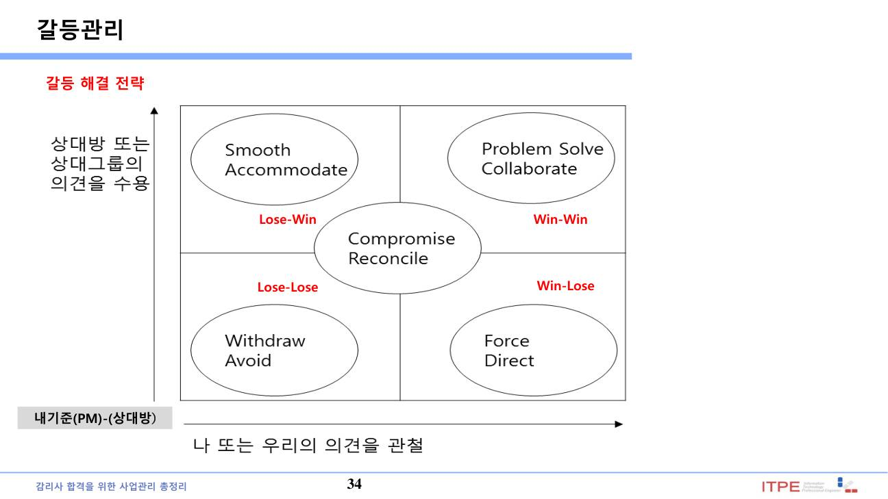
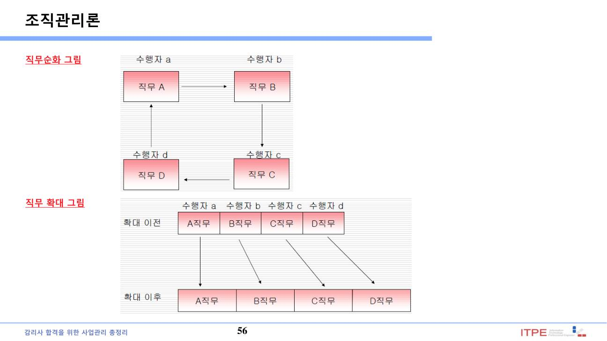
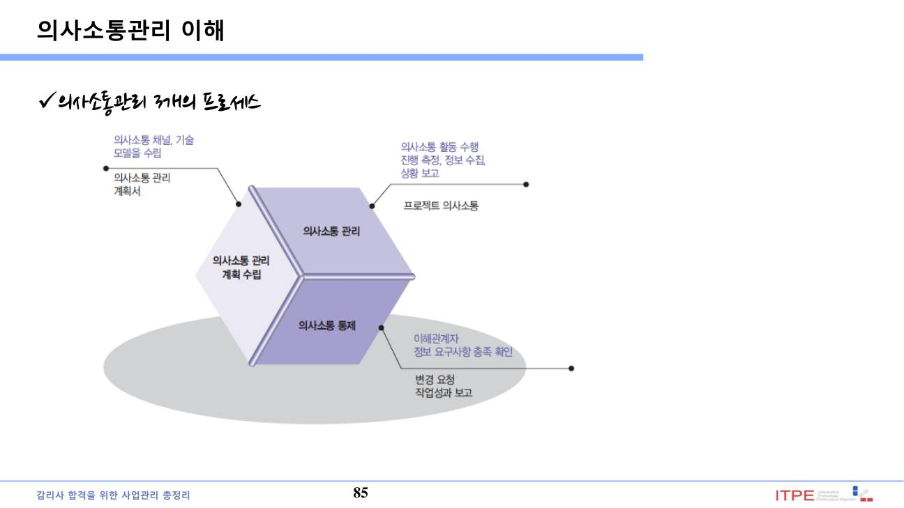
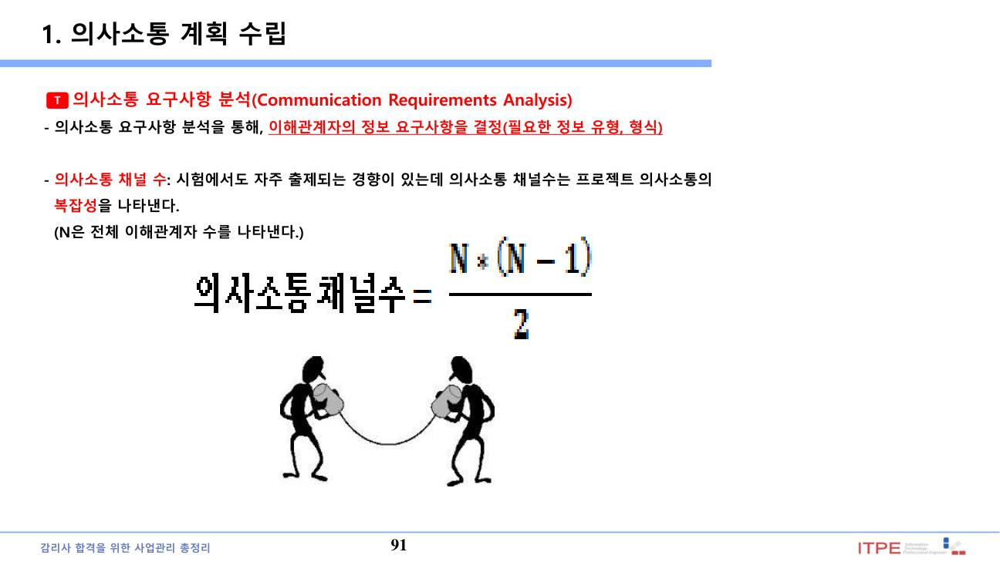
10. 위험관리 프로세스
위험관리는 프로젝트 위험을 식별·분석·대응·감시하여 긍정적 사건(기회)은 늘리고 부정적 사건(위협)은 줄이는 지식영역이다.
| 프로세스 | 내용 |
|---|---|
| 위험관리 계획수립 | 위험관리 방법·역할·RBS(위험분류체계) 정의 |
| 위험 식별 | 위험 도출·문서화 → 위험 관리대장(Risk Register) |
| 정성적 위험분석 | 확률·영향으로 우선순위 결정(P-I Matrix) |
| 정량적 위험분석 | 수치적 영향 분석(몬테카를로·EMV·민감도) |
| 위험대응 계획수립 | 대응 전략 수립(회피·전가·완화·수용 등) |
| 위험대응 실행 | 합의된 대응 실행 |
| 위험 감시 | 잔존·2차 위험 감시, 새 위험 식별 |
프로세스별 상세 설명
② 위험 식별: 개별·전체 위험을 도출하고 특성을 문서화 → 위험 관리대장(Risk Register).
③ 정성적 위험분석: 위험의 발생확률·영향을 평가하여 우선순위를 결정(P-I 매트릭스).
④ 정량적 위험분석: 식별된 위험이 목표에 미치는 영향을 수치로 분석(몬테카를로·EMV). 생략 가능.
⑤ 위험대응 계획수립: 위협·기회에 대한 대응 전략·조치를 개발(회피·전가·완화·수용 등).
⑥ 위험대응 실행: 합의된 위험 대응 계획을 실제로 이행.
⑦ 위험 감시: 대응 실행을 추적하고 잔존·2차·새로운 위험을 감시.
▸ 원본 p.112 표 복원: 위험 관리 계획 수립
| 입력물(Input) | 도구 및 기법(Tool & Technique) | 산출물(Output) |
|---|---|---|
| 프로젝트 관리 계획서 (Project Management Plan) 프로젝트 헌장(Project Charter) 이해관계자 관리대장★ (Stakeholder Register) 기업환경요인(EEF) 조직 프로세스 자산(OPA) | 분석기법(Analytical Techniques) 전문가 판단(Expert judgment) 회의(Meeting) | 위험 관리 계획서 (Risk Management Plan) |
▸ 원본 p.119 표 복원: 위험 식별
| 입력물(Input) | 도구 및 기법(Tool & Technique) | 산출물(Output) |
|---|---|---|
| 위험 관리 계획서 (Risk Management Plan) 원가 관리 계획서 (Cost Management Plan) 일정 관리 계획서(Schedule Management Plan) 품질 관리 계획서 (Quality Management Plan) 인적 자원 관리 계획서(Human Resource Management Plan) 범위기준선(Scope Baseline) 활동 원가 산정치 (Activity Cost Estimates) 활동 기간 산정치 (Activity Duration Estimates) 이해관계자 관리대장 (Stakeholder Register) 프로젝트 문서 (Project Documents) 조달 문서 (Procurement Documents) 기업환경요인(EEF) 조직 프로세스 자산(OPA) | 문서검토(Documentation Reviews) 정보수집기법 (Information Gathering Techniques) 점검 목록 분석(Checklist Analysis) 가정사항 분석 (Assumption Analysis) 도식화 기법 (Diagramming Techniques) SWOT 분석(SWOT Analysis)★ 전문가 판단(Expert Judgment) 위험 식별(Iden | 위험 관리대장(Risk Register)★ tify Risks) ITO |
▸ 원본 p.128 표 복원: 위험 식별
| 위험 관리대장 항목 | 설명 |
|---|---|
| 위험 목록 | 식별된 위험을 상세하게 기술한 목록으로 위험에 대한 단순한 구조로 작성하게 되고 ‘A라는 사건이 발생되면 B라는 결과를 초래할 수 있다.’ 등으로 표현됨 위험이 발생하게 되는 한 가지 이상의 원인도 작성하여 이는 향후 유사 프로젝트나 다른 프로젝트 수행 시 선례 정보로 사용 가능 |
| 대응방안 목록 | 위험에 대한 잠재적인 대응 방안이 위험 식별 과정에서 도출되기도 하기도 하여 위험 대응 단계의 입력물로 유용하게 사용 |
| 위험의 근본 원인 | 식별된 위험이 발생하게 되는 근본적인 원인이나 프로젝트 상황에 대한 자세한 설명 |
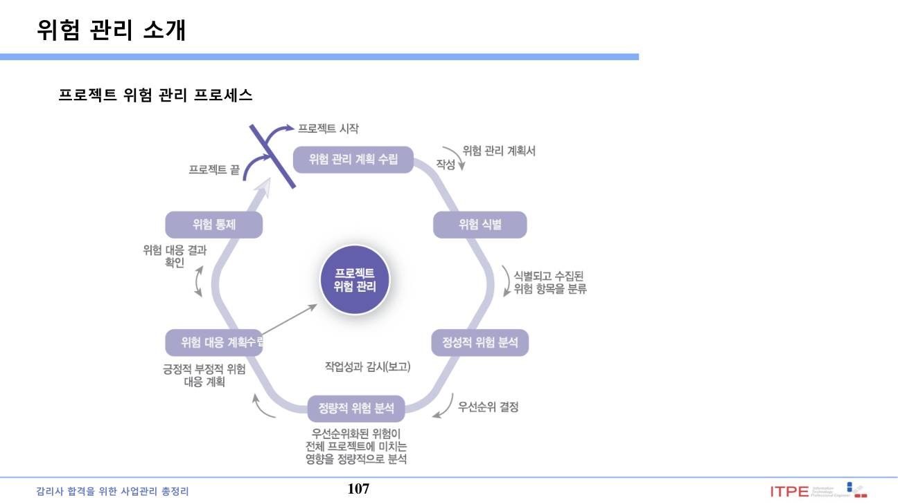
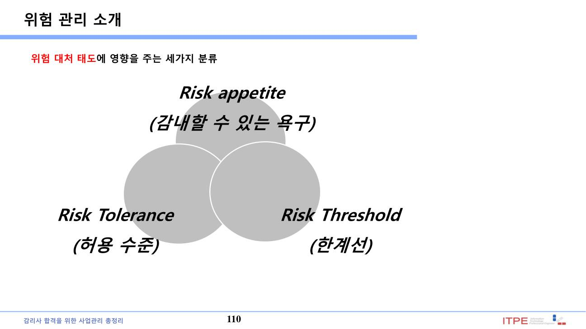
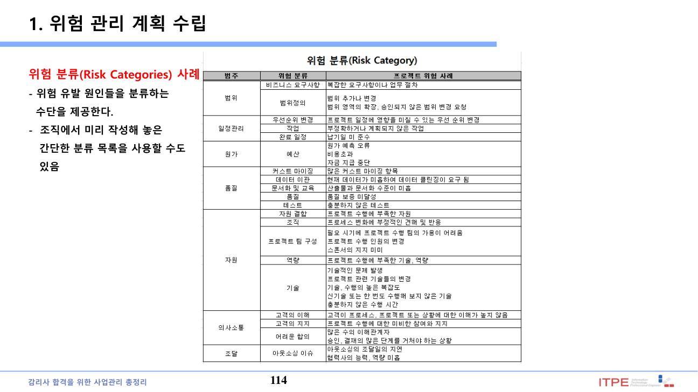
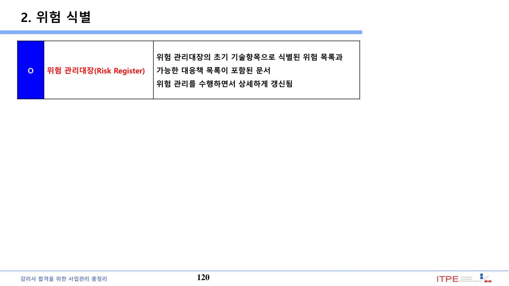
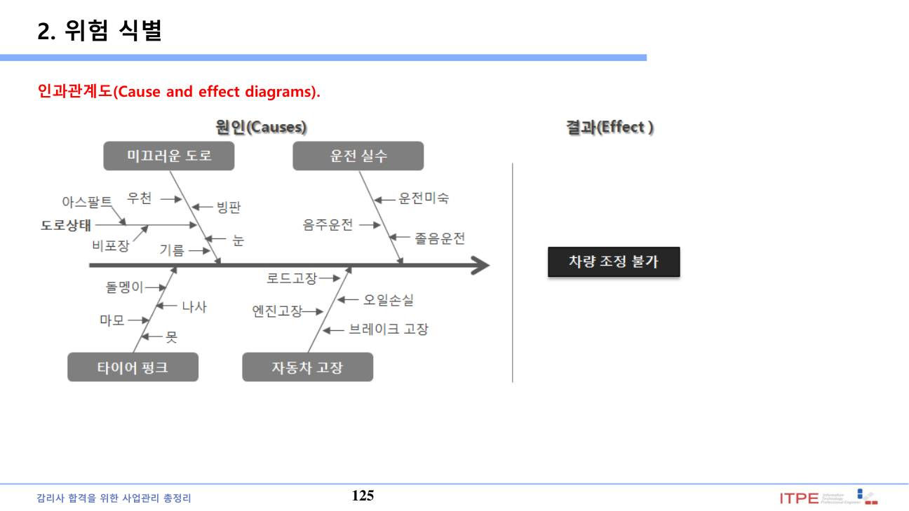
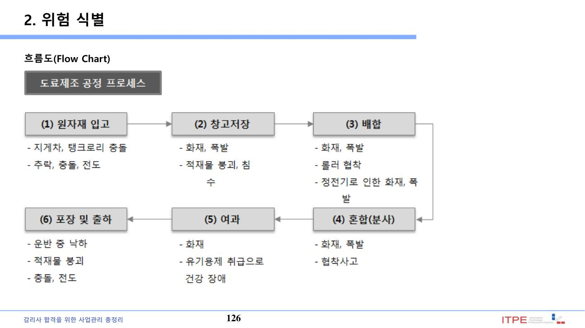
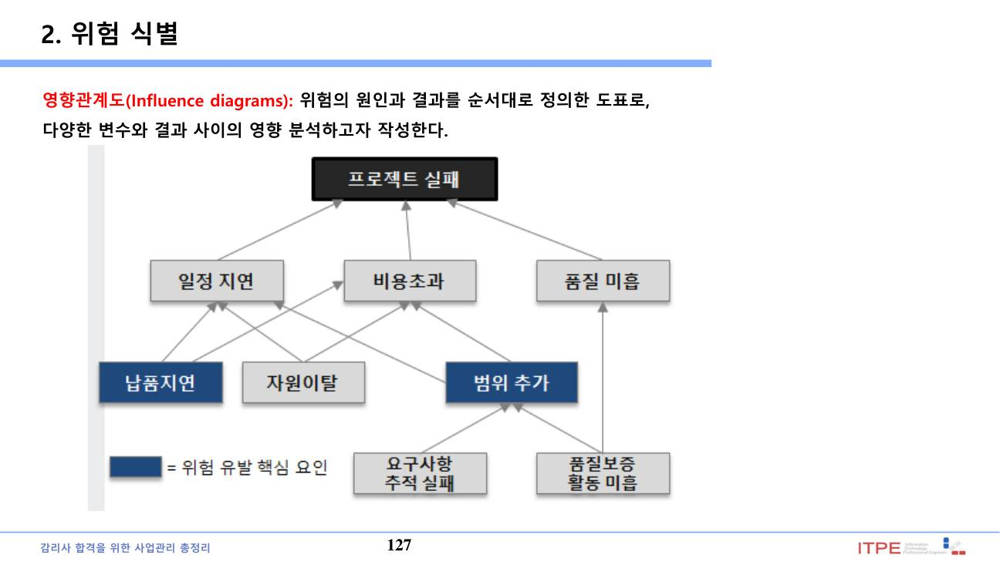
11. 정성적 · 정량적 위험분석 ★★
식별된 위험은 정성적 분석으로 우선순위를 정하고, 필요 시 정량적 분석으로 목표에 미치는 영향을 수치화한다.
| 정성적(Qualitative) | 정량적(Quantitative) |
|---|---|
| 확률·영향 매트릭스(P-I)로 우선순위 결정. 빠르고 주관적. 모든 위험에 수행 | 수치로 영향 분석 – 몬테카를로 시뮬레이션, EMV(기대화폐가치), 민감도(토네이도), 의사결정 트리. 주요 위험만 |
▸ 원본 p.131 표 복원: 정성적 위험 분석 수행
| 입력물(Input) | 도구 및 기법(Tool & Technique) | 산출물(Output) |
|---|---|---|
| 위험 관리 계획서 (Risk Management Plan) 범위기준선(Scope Baseline) 위험 관리대장(Risk Register) 기업환경요인(EEF) 조직 프로세스 자산(OPA) | 위험 확률 및 영향력 평가 (Risk Probability and Impact Assessment) 위험 확률 및 영향력 매트릭스 (Probability and Impact Matrix) 위험 데이터 품질 평가 (Risk Data Quality Assessment) 위험 유형 분류★ (Risk Categorization) 위험 긴급도 평가 (Risk Urgency Assessment) 전문가 판단(Expert Judgment) | 프로젝트 문서 갱신 (Project Document Updates) |
▸ 원본 p.140 표 복원: 정량적 위험 분석
| 입력물(Input) | 도구 및 기법(Tool & Technique) | 산출물(Output) |
|---|---|---|
| 위험 관리 계획서 (Risk Management Plan) 원가 관리 계획서 (Cost Management Plan) 일정 관리 계획서(Schedule Management Plan) 위험 관리대장(Risk Register) EEF OPA | 데이터 수집 및 표현 기법 (Data Gathering and Representation Techniques) 정량적 위험 분석 및 모델링 기법 (Quantitative Risk Analysis and Modeling Techniques) 전문가 판단(Expert Judgment) | 프로젝트 문서 갱신 (Project Document Updates) |
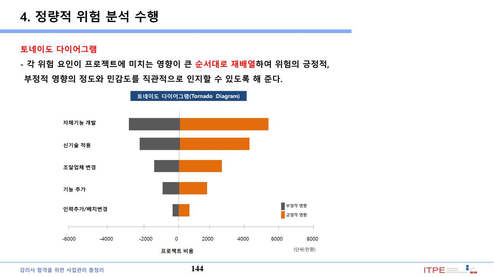
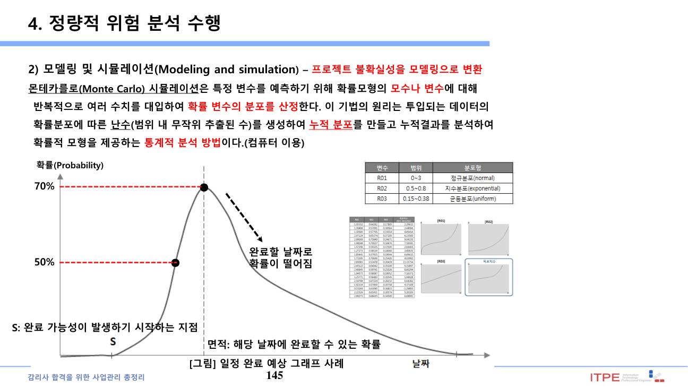
12. 위험 대응 전략 ★★★
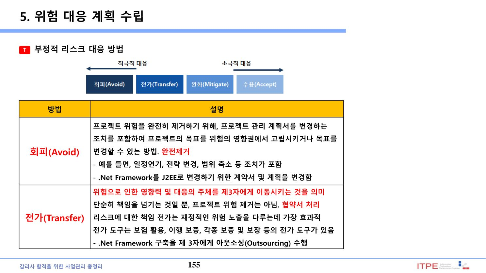
| 부정적 위험(위협) | 긍정적 위험(기회) |
|---|---|
|
회피(Avoid): 위험 원인 제거(범위 변경 등) 전가(Transfer): 제3자에 이전(보험·외주·보증) 완화(Mitigate): 확률·영향 감소 수용(Accept): 특별 조치 없이 감수(우발예비) |
활용(Exploit): 기회 확실히 실현 공유(Share): 제3자와 협업(파트너십) 증대(Enhance): 확률·영향 증가 수용(Accept): 적극 대응 없이 기회 수용 |
위협·기회 모두 조직 권한 밖이면 에스컬레이션(Escalate)으로 상위에 이관한다.
▸ 원본 p.154 표 복원: 위험 대응 계획 수립
| 입력물(Input) | 도구 및 기법(Tool & Technique) | 산출물(Output) |
|---|---|---|
| 위험 관리 계획서 (Risk Management Plan) 위험 관리대장(Risk Register) | 부정적 위험 및 위협 대응 전략 (Strategies for Negative Risks or Threats) 긍정적 위험 및 기회 대응 전략 (Strategies for Positive Risks or Opportunities) 우발사태 대응 전략 (Contingent Response Strategies) 전문가 판단 (Expert Judgment) | 프로젝트 관리계획서 갱신 (Project Management Plan Updates) 프로젝트 문서 갱신 (Project Document Updates) |
▸ 원본 p.161 표 복원: 위험 통제(Control Risks)
| 입력물(Input) | 도구 및 기법(Tool & Technique) | 산출물(Output) |
|---|---|---|
| 프로젝트 관리 계획서 (Project Management Plan) 위험 관리대장 (Risk Register) 작업성과 데이터 (Work Performance Data) 작업성과보고서 (Work Performance Reports) | 위험 재평가(Risk Reassessment) 위험감사(Risk Audits) 차이 및 추이분석 (Variance and Trend Analysis) 기술적 성과 측정치 (Technical Performance Measurement) 예비분석(Reserve Analysis) 미팅(Meetings) | 작업성과정보 (Work Performance Information) 변경요청 (Change Requests) 프로젝트 관리계획서 갱신 (Project Management Plan Updates) 프로젝트 문서 갱신 (Project Document Updates) 조직 프로세스 자산 갱신 (OPA Updates) |
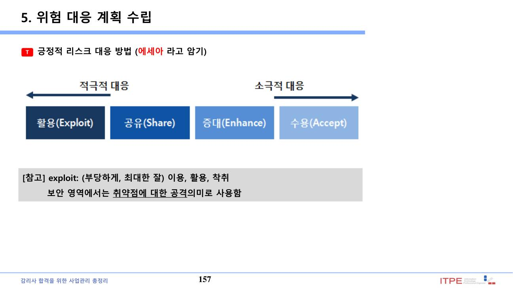
📚 전체 기출·예상문제 (22문항) — 원문 수록
본 강좌 원본 PDF에 수록된 기출·예상문제를 빠짐없이 원문 그대로 정리했습니다. 정답·해설은 강의 원문 기준입니다.